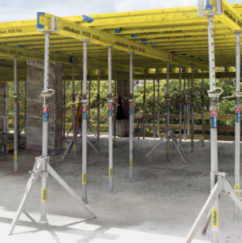

Dokaflex
- Dokaflex es un sistema manual rápido y flexible para todos los tipos de losas y vigas peraltadas, o sea, un sistema de encofrado rentable y optimizado para esta aplicación, basado en la eficaz viga de encofrado de madera Doka H20, asi como los puntales Doka y convencionales con capacidades de carga de 20 kN y 10 kN, respectivamente.
Ventajas del Sistema:
- – Reducidos costos en el encofrado de la obra.
- – Logística de la obra simplificada gracias a piezas fáciles de ajustar entre sí.
- – Montaje rápido y controlado gracias a marcas en el sistema.
- – Vigas descolgadas y salientes del forjado solucionados sencillamente en el sistema.
- – Perfecta adaptación
- – Se trabaja cualquier espesor de losa y cualquier sección de vigas peraltadas.
